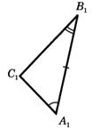
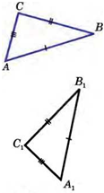
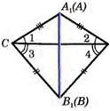
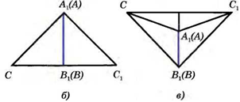

Второй и третий признаки равенства теугольников
Второй признак равенства треугольников
Если сторона и два прилежащих к ней угла одного треугольника соответственно равны стороне и двум
прилежащим к ней углам другого треугольника, то такие тре-угольники равны.
Рассмотрим треугольники АВС и A1B1C1 у которых
АВ = А1В1,
∠A=∠A1 ∠B = ∠B1
(рис.1). Докажем, что ∆АВС = ∆A1B1C1

Наложим треугольник АВС на треугольник А1В1С1 так, чтобы вершина А
совместилась с вершиной А1
сторона АВ — с равной ей стороной А1В1, а вершины С и С1, оказались
по одну сторону от прямой А1В1.
Так как ∠A = ∠A1 и ∠B = ∠B1 то сторона АС наложится на луч А1С1,
а сторона ВС — на луч B1C1 Поэтому
вершина С — общая точка сторон АС и ВС — окажется лежащей как на луче А1С1 так
и на луче В1С1 и,
следовательно, совместится с общей точкой этих лучей — вершиной С1 Значит, совместятся
стороны АС и
А1С1, ВС и В1С1.
Итак, треугольники АВС и А1В1С1 полностью совместятся, поэтому они
равны. Теорема доказана.
Третий признак равенства треугольников
Если три стороны одного треугольника соответственно равны трем сторонам другого треугольника, то
такие треугольники равны.
Рассмотрим треугольники АВС и А1В1С1
у которых АВ=А1В1, ВС=В1С1,
CA=C1A1 (рис. 2).

Докажем, что
∆АВС = ∆A1B1C1. Приложим треугольник АВС
к треугольнику А1В1С1 так, чтобы вершина А совместилась с
вершиной A1 вершина В — с вершиной В1, а вершины С и С1
оказались по разные стороны от прямой А1В1
(рис. 3).

Возможны три случая: луч С1С проходит внутри угла А1С1В1
(рис. 4, а); луч С1С совпадает с одной из
сторон этого угла (рис. 4 б); луч С1С проходит вне угла
А1С1В1 (рис. 4, в).

Рассмотрим первый случай (остальные случаи рассмотрите самостоятельно).
Так как по условию теоремы стороны АС и A1C1, ВС и B1C1
равны, то треугольники A1C1C и B1C1C —
равнобедренные (см. рис. 5).
По теореме о свойстве углов равнобедренного треуголь-ника ∠1 =∠2, ∠3
= ∠4, поэтому ∠A1CB1 = ∠A1C1B1.
Итак, АС=А1С1, ВС= B1C1, ∠C=∠C1
Следовательно, треугольники АВС и А1В1С1 равны по первому признаку
равенства
треугольников. Теорема доказана.